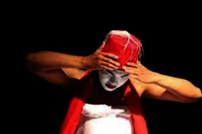
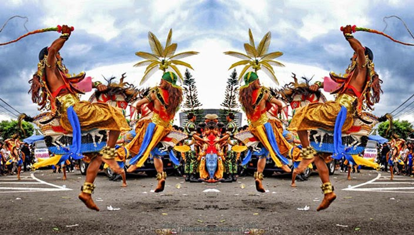
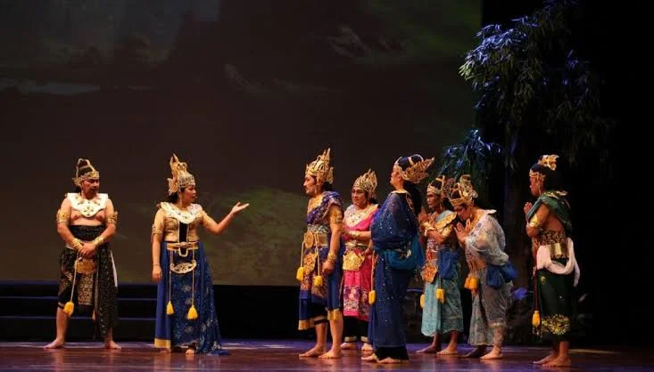
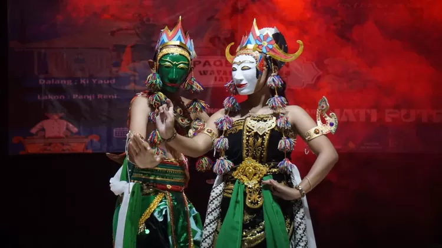

SENI BUDAYA JOMBANG
HALAMAN 05
Seni Teater Rakyat

Besutan — Leluhur Ludruk dari Jombang
🎭 Besutan
● Cikal Bakal Ludruk — Lahir di Jombang
Besutan adalah kesenian teater rakyat tertua di Jombang yang diyakini sebagai cikal bakal lahirnya Ludruk. Kesenian ini diciptakan oleh seorang seniman legendaris Jombang bernama Pak Santik pada akhir abad ke-19, sekitar tahun 1907.
Nama "Besutan" berasal dari kata mbesut (melap/membersihkan) yang menggambarkan tokoh utamanya: Pak Besut, seorang rakyat jelata berpakaian sederhana dengan ikat kepala merah putih yang melambangkan semangat kebangsaan. Tokoh ini menjadi simbol perlawanan rakyat terhadap penjajahan secara halus melalui seni.
Pertunjukan Besutan dibawakan oleh satu atau dua orang pemain dengan dialog jenaka berbahasa Jawa ngoko khas Jombang. Iringan musik menggunakan kendang, gong, dan suling sederhana. Besutan tampil dalam hajatan kampung, syukuran, dan upacara adat.
Keunikan Besutan terletak pada fungsinya sebagai media dakwah dan kritik sosial — pesan disampaikan secara tersirat melalui humor dan lakon yang mengena di hati masyarakat.
Nama "Besutan" berasal dari kata mbesut (melap/membersihkan) yang menggambarkan tokoh utamanya: Pak Besut, seorang rakyat jelata berpakaian sederhana dengan ikat kepala merah putih yang melambangkan semangat kebangsaan. Tokoh ini menjadi simbol perlawanan rakyat terhadap penjajahan secara halus melalui seni.
Pertunjukan Besutan dibawakan oleh satu atau dua orang pemain dengan dialog jenaka berbahasa Jawa ngoko khas Jombang. Iringan musik menggunakan kendang, gong, dan suling sederhana. Besutan tampil dalam hajatan kampung, syukuran, dan upacara adat.
Keunikan Besutan terletak pada fungsinya sebagai media dakwah dan kritik sosial — pesan disampaikan secara tersirat melalui humor dan lakon yang mengena di hati masyarakat.
Cikal Bakal Ludruk
Pak Besut
1907
Kritik Sosial
SENI BUDAYA
JOMBANG
JOMBANG
Scan QR untuk membuka
buku digital ini
buku digital ini
SCAN & SHARE
HALAMAN 04
Seni Pertunjukan Rakyat

Jaran Kepang Dor — Kesenian Sakral Jombang
🐎 Jaran Kepang Dor
● Kesenian Sakral Khas Jombang — Akar Budaya Mataraman
Jaran Kepang Dor adalah varian unik kesenian kuda kepang yang berkembang khas di wilayah Jombang, berbeda dengan Jaranan pada umumnya. Kata "Dor" berasal dari bunyi instrumen utamanya — terbang dor, yaitu rebana besar berdiameter 50–70 cm yang menghasilkan suara menggelegar seperti "dor!".
Instrumen pengiring Jaran Kepang Dor sangat khas: terbang dor, kentongan, angklung bambu, dan gong kecil yang membentuk harmoni ritmis primitif namun memukau. Tidak menggunakan gamelan seperti jaranan biasa, inilah keunikan yang membedakannya.
Para penari (disebut pembarong) menunggangi kuda anyaman bambu sambil menari dengan gerakan dinamis dan trance. Pertunjukan selalu diawali dengan ritual selamatan dan pembacaan doa keselamatan oleh sesepuh.
Jaran Kepang Dor berfungsi sebagai tolak bala, penghormatan leluhur, dan hiburan rakyat. Biasa ditampilkan saat bersih desa, khitanan massal, dan peringatan hari besar nasional di desa-desa Jombang.
Instrumen pengiring Jaran Kepang Dor sangat khas: terbang dor, kentongan, angklung bambu, dan gong kecil yang membentuk harmoni ritmis primitif namun memukau. Tidak menggunakan gamelan seperti jaranan biasa, inilah keunikan yang membedakannya.
Para penari (disebut pembarong) menunggangi kuda anyaman bambu sambil menari dengan gerakan dinamis dan trance. Pertunjukan selalu diawali dengan ritual selamatan dan pembacaan doa keselamatan oleh sesepuh.
Jaran Kepang Dor berfungsi sebagai tolak bala, penghormatan leluhur, dan hiburan rakyat. Biasa ditampilkan saat bersih desa, khitanan massal, dan peringatan hari besar nasional di desa-desa Jombang.
Terbang Dor
Trance
Tolak Bala
Kuda Anyaman
HALAMAN 05
Seni Teater Rakyat
Besutan — Leluhur Ludruk dari Jombang
🎭 Besutan
● Cikal Bakal Ludruk — Lahir di Jombang (1907)
Besutan diciptakan oleh Pak Santik sekitar tahun 1907. Tokoh utamanya Pak Besut mengenakan ikat kepala merah putih sebagai simbol kebangsaan. Kesenian ini menjadi cikal bakal Ludruk yang dikenal luas hingga kini.
Dibawakan dengan dialog jenaka bahasa Jawa ngoko, Besutan berfungsi sebagai media dakwah dan kritik sosial yang halus.
Dibawakan dengan dialog jenaka bahasa Jawa ngoko, Besutan berfungsi sebagai media dakwah dan kritik sosial yang halus.
Pak BesutCikal Bakal LudrukDakwah Budaya
HALAMAN 03
Seni Teater Rakyat

Ludruk — Teater Rakyat Kebanggaan Jombang
🎪 Ludruk
● Teater Rakyat Terbesar Jawa Timur — Asal Jombang
Ludruk adalah seni pertunjukan teater rakyat yang lahir dan tumbuh besar di Jombang, Jawa Timur. Merupakan perkembangan dari kesenian Besutan, Ludruk berkembang pesat pada awal abad ke-20 menjadi hiburan rakyat paling populer di seluruh Jawa Timur.
Pertunjukan Ludruk menggabungkan empat unsur seni sekaligus: drama (lakon), tari remo sebagai pembuka, nyanyian (tandhakan), dan lawak (dagelan). Urutan pertunjukan selalu dimulai dengan Tari Remo → Dagelan Besutan → Lakon utama.
Ciri paling khas Ludruk adalah semua pemeran wanita dimainkan oleh laki-laki yang disebut waranggono atau ludrukan. Mereka berdandan sangat mirip wanita dan sering menjadi bagian paling dinantikan penonton.
Tema cerita Ludruk beragam: dari kisah perjuangan kemerdekaan, cerita rakyat lokal, hingga permasalahan sosial masa kini. Pada masa revolusi, Ludruk menjadi senjata propaganda yang ampuh untuk membangkitkan semangat perjuangan rakyat melawan penjajah.
Pertunjukan Ludruk menggabungkan empat unsur seni sekaligus: drama (lakon), tari remo sebagai pembuka, nyanyian (tandhakan), dan lawak (dagelan). Urutan pertunjukan selalu dimulai dengan Tari Remo → Dagelan Besutan → Lakon utama.
Ciri paling khas Ludruk adalah semua pemeran wanita dimainkan oleh laki-laki yang disebut waranggono atau ludrukan. Mereka berdandan sangat mirip wanita dan sering menjadi bagian paling dinantikan penonton.
Tema cerita Ludruk beragam: dari kisah perjuangan kemerdekaan, cerita rakyat lokal, hingga permasalahan sosial masa kini. Pada masa revolusi, Ludruk menjadi senjata propaganda yang ampuh untuk membangkitkan semangat perjuangan rakyat melawan penjajah.
Waranggono
Dagelan
Tandhakan
Tari Remo
HALAMAN 04
Seni Pertunjukan Rakyat
Jaran Kepang Dor — Kesenian Sakral Jombang
🐎 Jaran Kepang Dor
● Kesenian Sakral Khas Jombang
Jaran Kepang Dor khas Jombang menggunakan instrumen terbang dor — rebana besar 50–70 cm yang menghasilkan suara menggelegar. Tidak pakai gamelan, inilah yang membedakannya dari jaranan biasa.
Penari (pembarong) menunggangi kuda anyaman bambu dengan gerakan trance. Berfungsi sebagai tolak bala dan penghormatan leluhur.
Penari (pembarong) menunggangi kuda anyaman bambu dengan gerakan trance. Berfungsi sebagai tolak bala dan penghormatan leluhur.
Terbang DorTranceTolak Bala
HALAMAN 02
Seni Pertunjukan Klasik

Wayang Topeng Jatiduwur — Pusaka Budaya Jombang
🎭 Wayang Topeng Jatiduwur
● Warisan Budaya Tak Benda — Desa Jatiduwur, Kesamben, Jombang
Wayang Topeng Jatiduwur adalah kesenian langka dan sangat berharga yang hanya ada di Desa Jatiduwur, Kecamatan Kesamben, Kabupaten Jombang. Kesenian ini telah ada sejak ratusan tahun lalu dan diwariskan secara turun-temurun dalam satu keluarga pelestari.
Berbeda dengan wayang kulit yang menggunakan bayangan, Wayang Topeng ditampilkan secara langsung oleh penari yang mengenakan topeng (mask) bermotif khas Majapahit. Setiap topeng mewakili karakter tertentu — putih untuk ksatria, merah untuk angkara murka, hitam untuk tokoh sakti, dan emas untuk dewa.
Kisah yang dibawakan berasal dari epos Panji — cerita asli Jawa yang lahir dari tanah Jawa Timur, menceritakan petualangan Raden Panji Asmarabangun mencari kekasihnya Dewi Sekartaji. Berbeda dari Mahabharata atau Ramayana, kisah Panji adalah identitas budaya murni Jawa.
Wayang Topeng Jatiduwur telah ditetapkan sebagai Warisan Budaya Tak Benda (WBTB) oleh Kementerian Pendidikan dan Kebudayaan RI. Pelestarian dilakukan dengan serius karena jumlah pengrawit dan penari yang mahir semakin sedikit.
Berbeda dengan wayang kulit yang menggunakan bayangan, Wayang Topeng ditampilkan secara langsung oleh penari yang mengenakan topeng (mask) bermotif khas Majapahit. Setiap topeng mewakili karakter tertentu — putih untuk ksatria, merah untuk angkara murka, hitam untuk tokoh sakti, dan emas untuk dewa.
Kisah yang dibawakan berasal dari epos Panji — cerita asli Jawa yang lahir dari tanah Jawa Timur, menceritakan petualangan Raden Panji Asmarabangun mencari kekasihnya Dewi Sekartaji. Berbeda dari Mahabharata atau Ramayana, kisah Panji adalah identitas budaya murni Jawa.
Wayang Topeng Jatiduwur telah ditetapkan sebagai Warisan Budaya Tak Benda (WBTB) oleh Kementerian Pendidikan dan Kebudayaan RI. Pelestarian dilakukan dengan serius karena jumlah pengrawit dan penari yang mahir semakin sedikit.
WBTB Nasional
Topeng Panji
Jatiduwur
Majapahit
HALAMAN 03
Seni Teater Rakyat
Ludruk — Teater Rakyat Kebanggaan Jombang
🎪 Ludruk
● Teater Rakyat Terbesar Jawa Timur
Ludruk lahir dari Jombang, menggabungkan Tari Remo, dagelan, tandhakan, dan lakon drama. Ciri khasnya: semua peran wanita dimainkan laki-laki (waranggono).
Pernah menjadi senjata propaganda kemerdekaan. Pertunjukan selalu dimulai dengan Tari Remo → Dagelan Besutan → Lakon utama.
Pernah menjadi senjata propaganda kemerdekaan. Pertunjukan selalu dimulai dengan Tari Remo → Dagelan Besutan → Lakon utama.
WaranggonoDagelanTari Remo
HALAMAN 01
Seni Tari Tradisional

Tari Remo — Mahkota Seni Kebanggaan Jombang
💃 Tari Remo
● Ikon Tari Jawa Timur — Lahir dari Rahim Jombang
Tari Remo adalah tarian paling ikonik dari Jombang dan menjadi ikon tari Jawa Timur. Lahir sebagai tarian pembuka pertunjukan Ludruk, kini Tari Remo telah menjelma menjadi tari penyambut tamu resmi di acara kenegaraan, festival budaya, dan upacara adat.
Kostum Tari Remo sangat khas: iket kepala (ikat kepala berlipat), baju beskap bercorak, sampur (selendang panjang) yang dilambai-lambaikan, jarik batik, dan deretan lonceng (klonthong) di pergelangan kaki yang berbunyi merdu mengikuti setiap hentakan.
Gerakan utama Tari Remo mencerminkan keberanian seorang ksatria: gejug (hentakan kaki keras ke lantai), trecet (berlari-lari kecil cepat di tempat), dan ukel (putaran pergelangan tangan yang lembut namun tegas).
Ada dua gaya Tari Remo: Remo Jombangan (lebih gagah, maskulin, tempo cepat) dan Remo Surabayan (lebih halus). Remo Jombangan dianggap gaya yang lebih tua dan otentik.
Kostum Tari Remo sangat khas: iket kepala (ikat kepala berlipat), baju beskap bercorak, sampur (selendang panjang) yang dilambai-lambaikan, jarik batik, dan deretan lonceng (klonthong) di pergelangan kaki yang berbunyi merdu mengikuti setiap hentakan.
Gerakan utama Tari Remo mencerminkan keberanian seorang ksatria: gejug (hentakan kaki keras ke lantai), trecet (berlari-lari kecil cepat di tempat), dan ukel (putaran pergelangan tangan yang lembut namun tegas).
Ada dua gaya Tari Remo: Remo Jombangan (lebih gagah, maskulin, tempo cepat) dan Remo Surabayan (lebih halus). Remo Jombangan dianggap gaya yang lebih tua dan otentik.
Ikon Jawa Timur
Gejug & Trecet
Remo Jombangan
Klonthong
HALAMAN 02
Seni Pertunjukan Klasik
Wayang Topeng Jatiduwur — Pusaka Budaya Jombang
🎭 Wayang Topeng Jatiduwur
● Warisan Budaya Tak Benda — Kesamben, Jombang
Kesenian langka dari Desa Jatiduwur, Kesamben. Penari mengenakan topeng bermotif Majapahit membawakankan kisah Panji — cerita asli Jawa. Telah ditetapkan sebagai WBTB Nasional oleh Kemdikbud RI.
Topeng putih = ksatria, merah = angkara, hitam = sakti, emas = dewa.
Topeng putih = ksatria, merah = angkara, hitam = sakti, emas = dewa.
WBTB NasionalTopeng PanjiJatiduwur
Kabupaten Jombang
SENI
BUDAYA
BUDAYA
Warisan Leluhur yang Abadi
● 5 SENI TRADISIONAL ● JOMBANG ●
Disusun oleh
Ringga Budi Utama
Politeknik Negeri Malang
HALAMAN 01
Seni Tari
Tari Remo — Mahkota Seni Jombang
Tari Remo
● Tari Penyambut Tamu Khas Jombang
Tari Remo merupakan tarian paling ikonik dari Jombang. Penari mengenakan kostum ikat kepala, sampur, dan lonceng di pergelangan kaki yang berbunyi merdu.
Gerakannya energik dan gagah, melambangkan keberanian ksatria dengan ciri khas gejug dan trecet.
Gerakannya energik dan gagah, melambangkan keberanian ksatria dengan ciri khas gejug dan trecet.
Tari PenyambutKsatria